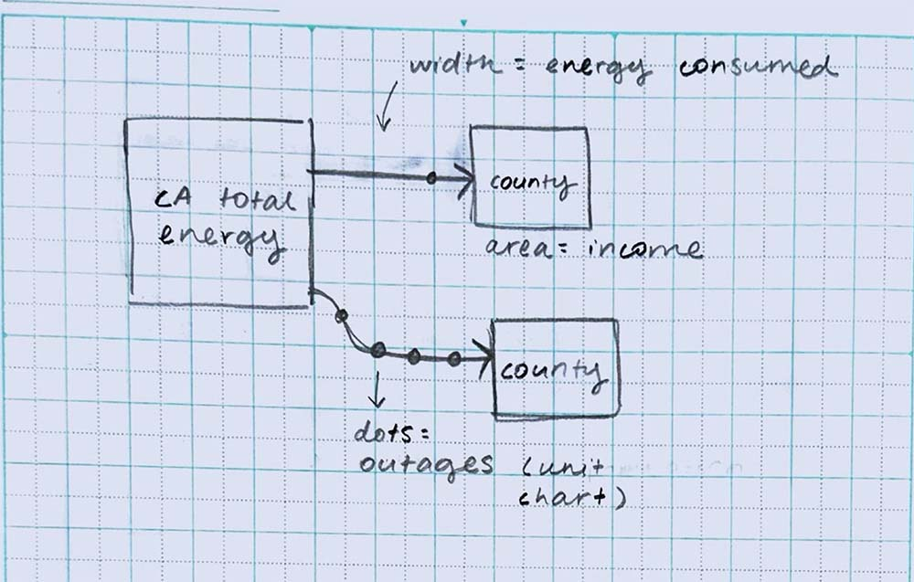

Overview
About This Project
This was an individual project for my Infographic and Data Visualization Design class at CSUSB. To design my visualization, I sourced, cleaned, and analyzed data. This project lasted about three weeks.
The Assignment
In this project, we were tasked with designing a network or hierarchical data visualization for a magazine spread.
My Deliverable
I designed a data visualization of California's energy resources for National Geographic Magazine. My design tells a story about California's progress towards its 2045 goal of 100% renewable energy resources.
Using area, hue, value, and position, my visualization communicates the amount of energy produced by each county, how much of that energy is renewable, and the population of each county.
Proposal
Energy and Income in California
When I started this project, I wanted to visualize relationships between energy and income in California. I was interested in trends dealing with energy produced, energy consumed, and the frequency of power outages.
Sketch of my initial idea.
These were some of the questions I was hoping to answer:
- Where does power come from in California?
- How much is generated and where?
- How much is used and where? For what purpose?
- How often is power shut off and where?
Research
Gathering Data
I started by gathering data dealing with energy in California, and consulted the census for data on income by county and city.
My biggest challenge was finding data at the same hierarchical level and time. Because 2020 was a census year, I had data for income and population at all hierarchical levels. I only needed to match my energy data to this year, but all of my sources varied. In the end, I was only able to find live data on outages, so I decided to explore other directions.
Understanding the Data
I combined all of my data for 2020 at the county level into one spreadsheet, and created pivot tables and graphs to see if there were any trends in the data.
Based on the data, I decided to visualize energy resources for California. These were the new questions I wanted to answer:
- Where does power come from in California?
- How much energy is generated?
- Where is energy generated?
- What kind of energy is generated?
California has set a goal of being powered by 100% renewable energy by 2045, so I decided to make my visualization a story about progress and work to be done.
Design
Ideation
I sketched out different ideas, exploring different chart types and visual variables.
Iterations
The amount and type of energy were the most important variables for my story, so I chose to represent them through size and color. Size was a straightforward calculation based on the amount of energy produced, but choosing a meaningful and accessible color palette required more time and consideration.
I researched a few accessible color palettes and worked up digital roughs for feedback in class.
Based on the feedback I received, I chose to move forward with the divergent red and blue color palette. The hue alone communicates whether a county is producing more renewable or non-renewable energy. Readers can focus on the specific value for more granular information.
I continued experimenting with different layouts, trying to account for the gutter of the magazine while adding the necessary keys and a secondary, contextual line graph. But, after adding connections, I still needed to revise my layout.
Final Design
The area of each circle represents the total energy produced in gigawatt hours (GWh). A red hue means most of that energy was non-renewable, while blue means a majority renewable. The circles representing the counties are arranged by population, with the more populous counties at the top.
Reflection
What I Learned
In this project, I learned that there is always a story to be told through data. Even though I didn't have the right data for my initial idea, I was able to tell a different story about energy in California. In that sense, data visualizations are never purely objective— we can always choose which data and variables to include in order to create a certain narrative.